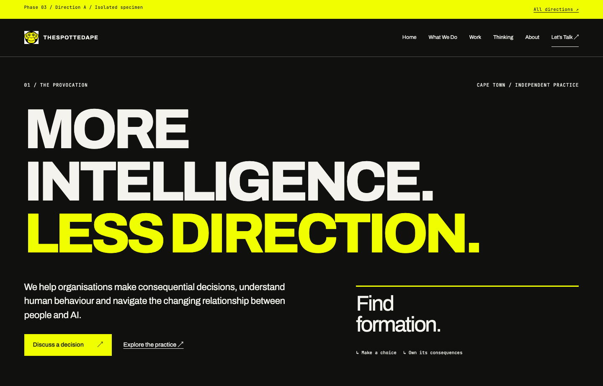
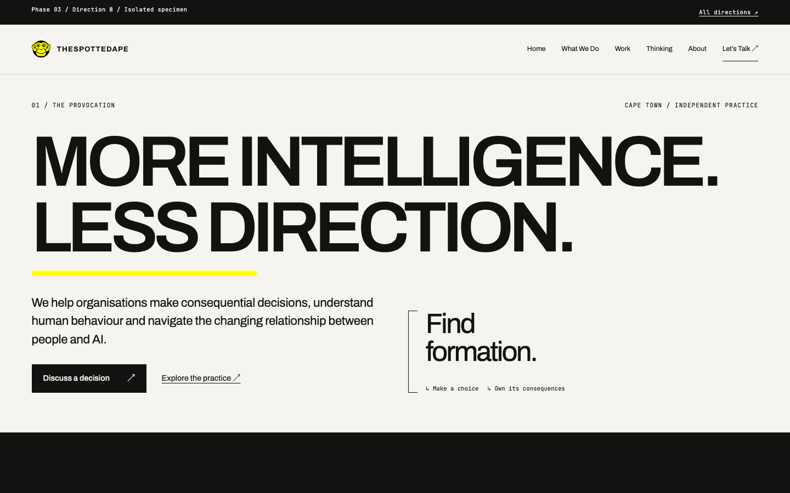
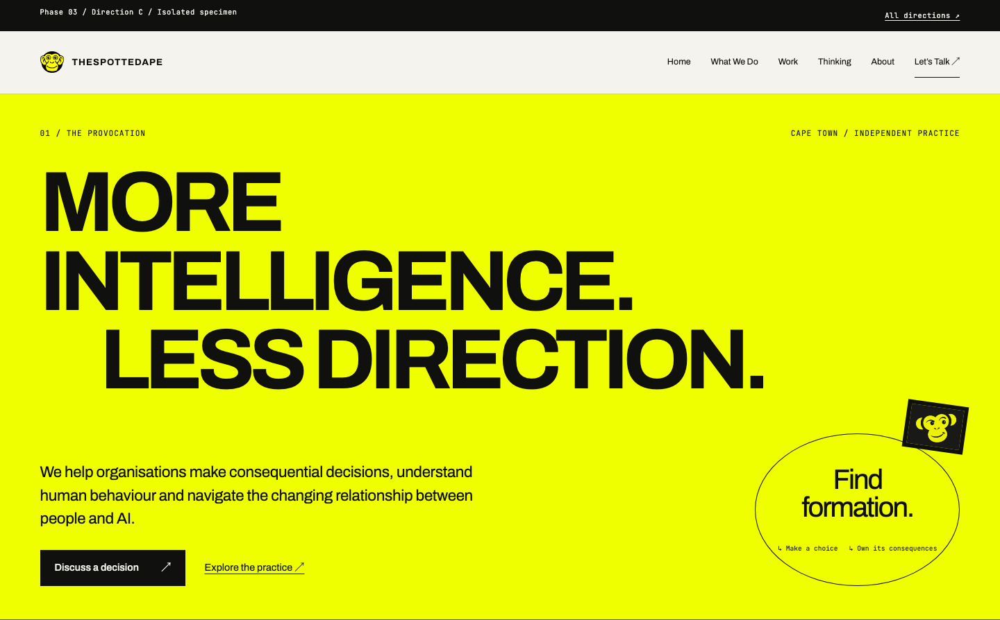

Editorial Monumentalism
Make judgement feel consequential. Typographic mass and deliberate emptiness create confidence before detail.
Explore direction A ↗
Three comparable visual directions for a strategic decision and behavioural design practice. Each includes the same six editorial movements, capability and project specimens, and a working fictional choice composition.
Selected palette: warm mineral B — Constellations of Judgement. Its graphic language makes commitments and their consequences visible while preserving an executive reading experience.
Make judgement feel consequential. Typographic mass and deliberate emptiness create confidence before detail.
Explore direction A ↗
Make the relationships inspectable. An editorial field of choices, brackets, interruptions and consequences expresses how judgement takes shape.
Explore direction B ↗
Pair intellectual seriousness with curiosity. A studio-notebook cadence and the existing monkey identity invite participation without trivialising the decision.
Explore direction C ↗
These are isolated prototypes. Production pages and deployment are unchanged. The full secondary architecture remains in the planning documents.
Browser checks and measured limits ↗Decision record ↗Production release-readiness checklist ↗